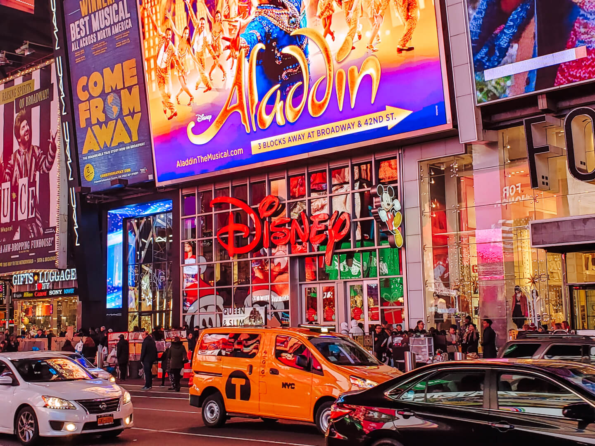
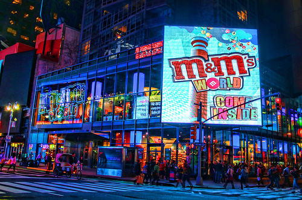

Times Square is zowel een plein als een buurt in Manhattan, New York in de buurt van 42nd Street en Broadway.
De naam is afgeleid van het voormalige hoofdkantoor van de krant The New York Times. Tot de bouw daarvan in 1904
heette het plein Longacre Square.
Opvallende kenmerken van het plein Times Square zijn de elektronische billboards, waarvan er meer dan 50 hangen.
Times Square heette eerder Longacre Square. In 1904 werd de bouw voltooid van het voormalige hoofdkantoor
van de krant The New York Times. Er werd besloten om het plein te vernoemen naar deze krant.
In de jaren tachtig ging het een tijd een stuk minder goed met Times Square. Het plein werd toen slecht onderhouden.
In de jaren negentig werkten de overheid en lokale ondernemers samen om er weer een prachtig plein van te maken,
zoals we het tegenwoordig kennen.
 
Op Times Square en in de omgeving ervan zijn er erg veel winkels waar je lekker kunt shoppen.
Er zijn ook een aantal bijzondere winkels. Zo heb je M&M’s World. Een winkel die volledig in het
teken staat van de chocoladesnoepjes. Koop ze in alle denkbare kleuren, of koop leuke spulletjes
zoals knuffels, boeken en tassen waar M&M’s op staan. Ook leuk is de Disney Store.
Een winkel met werkelijk alles van Disney wat je maar kunt bedenken.